graphic design
scroll horizontally within each section for more images
publications >>>
| 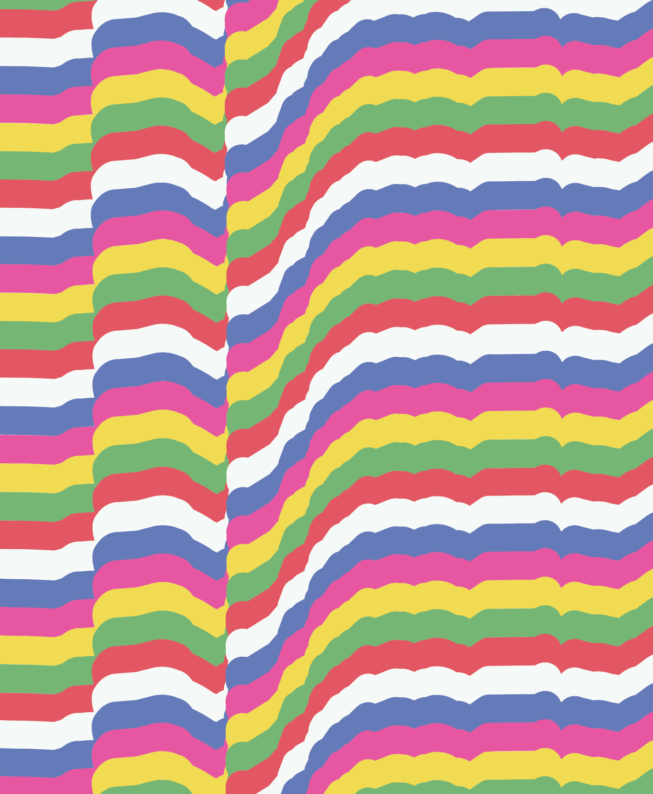 | 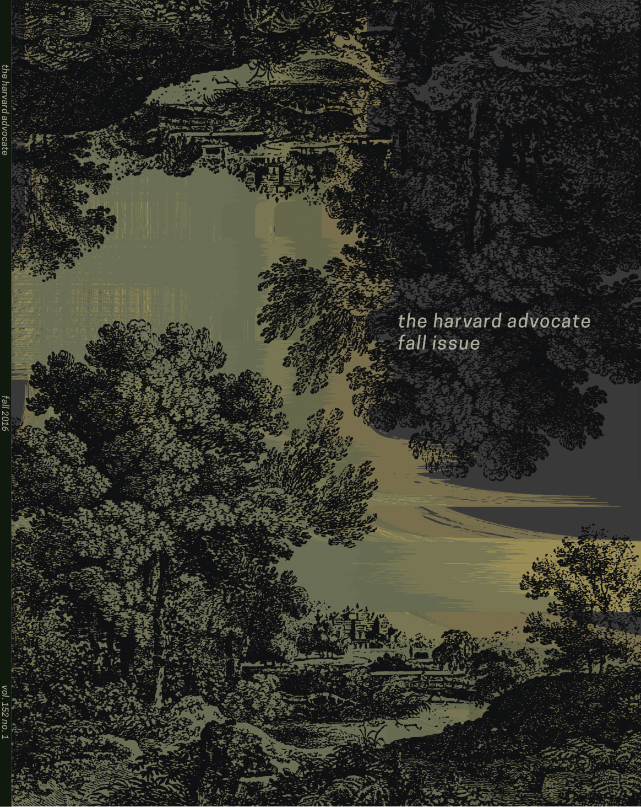 | 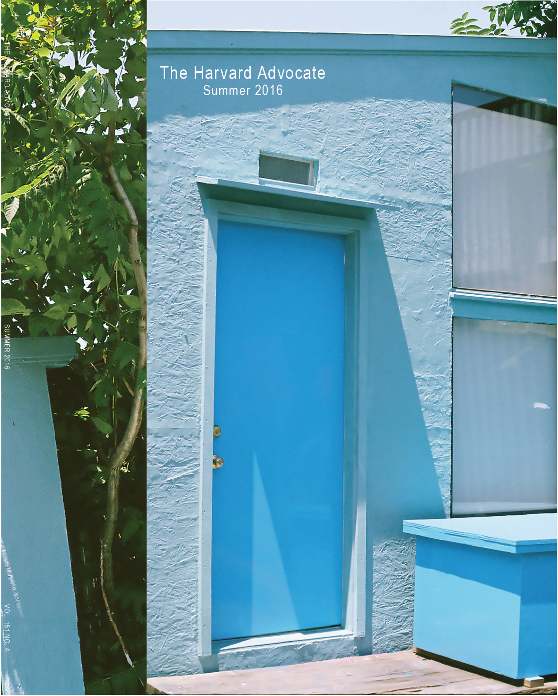 | 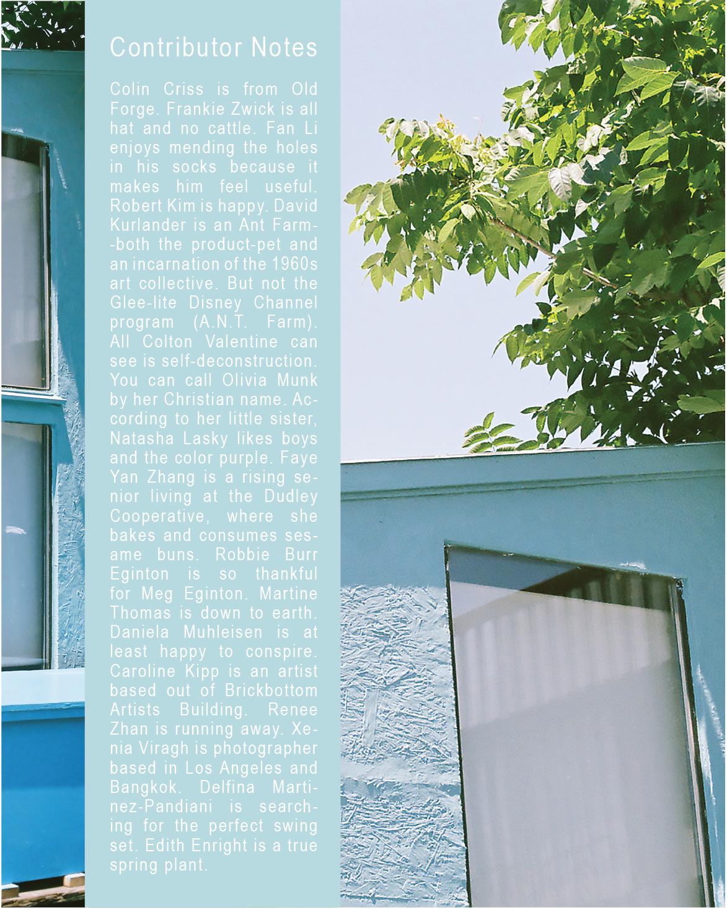 | 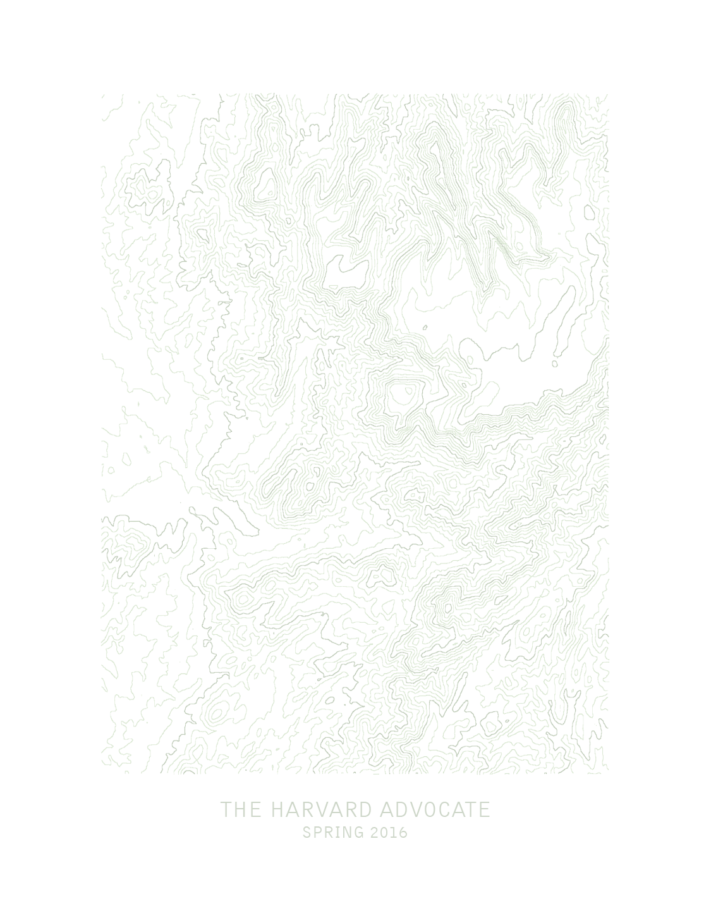 | 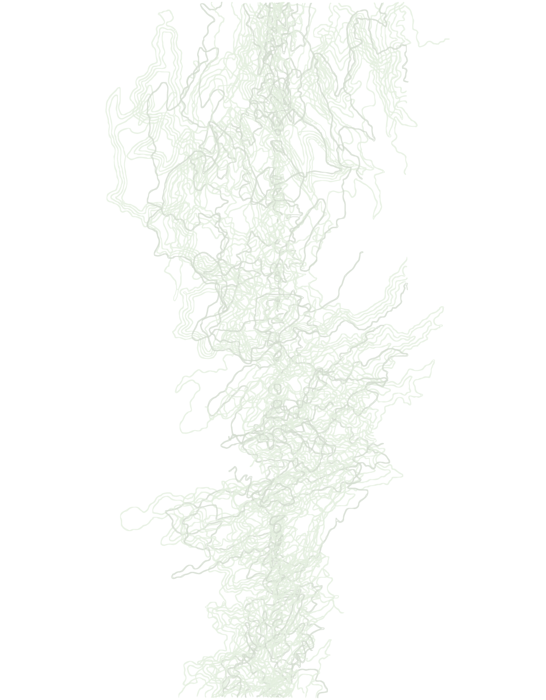 | |
| cover for an anthology directed by Bo Seo. I also did the entire anthology design and layout. printed in spring 2017. | back cover for anthology. | cover for the fall issue of the harvard advocate. found woodblock prints layered over textures created in processing. |
cover and back cover for the summer issue of the harvard advocate. photograph taken at secret project robot in brooklyn in 2014. |
cover and back cover for the spring issue of the harvard advocate. topographical map vectors manipulated in adobe illustrator. |
posters >>>
| 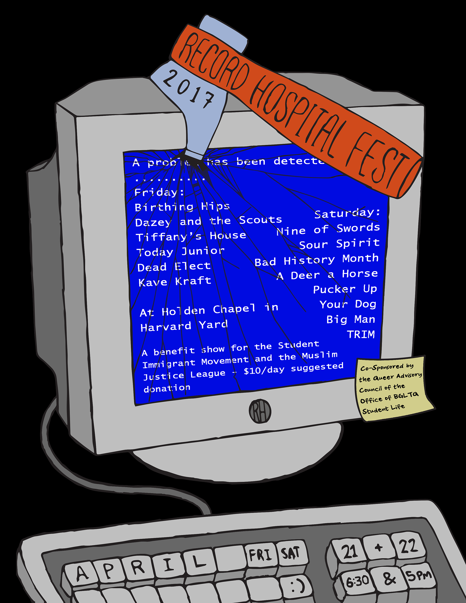 | 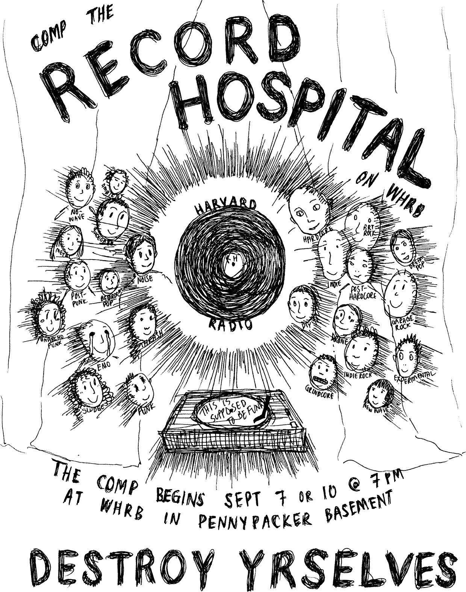 | 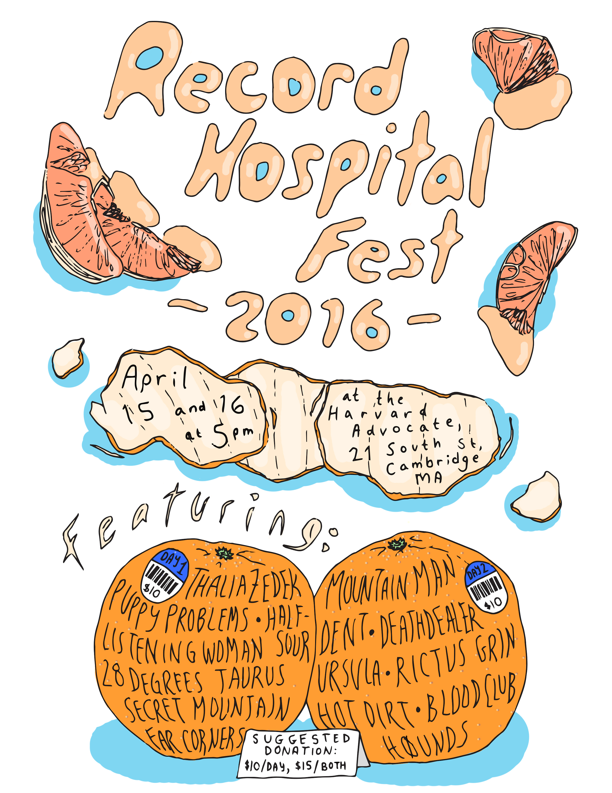 | 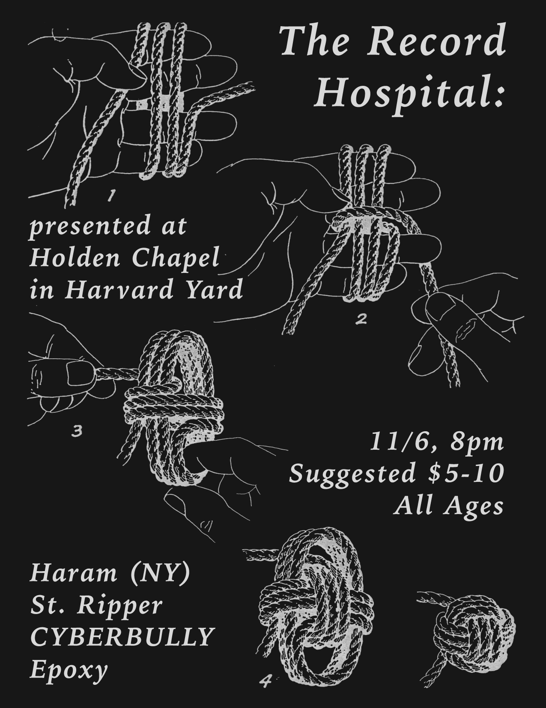 |  |
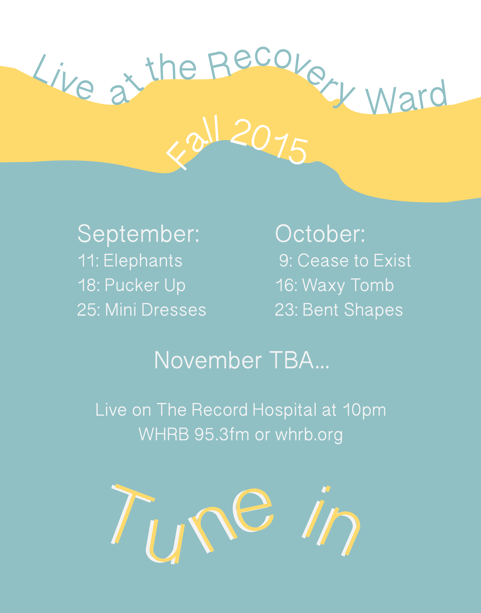 | 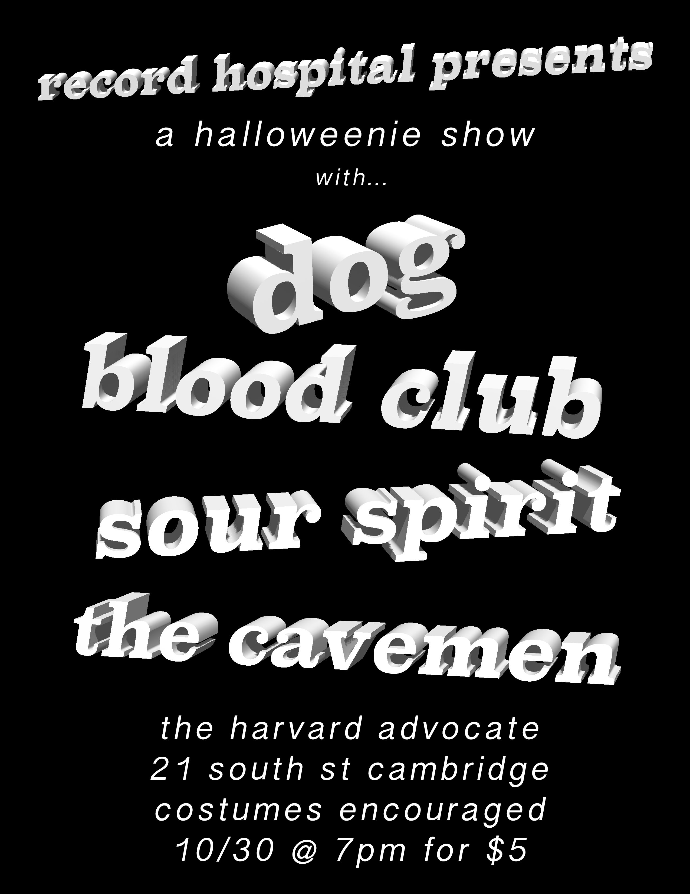 |
| poster for WHRB's record hospital's annual music festival (2017). drawn on paper then scanned and colored in adobe photoshop. |
poster advertising fall joining process for WHRB's record hospital. drawn on paper then scanned and colored in adobe photoshop. |
poster for WHRB's record hospital's annual music festival (2016). drawn on paper then scanned and colored in adobe photoshop. |
poster for 2016 halloween concert hosted by the record hospital. found images assembled in adobe photoshop. |
poster for the record hospital's spring 2016 live show schedule. cell phone photograph manipulated in adobe photoshop. |
poster for the record hospital's fall 2015 live show schedule. layout designed in adobe illustrator. |
poster for 2015 halloween concert hosted by the record hospital. 3d text generated in adobe photoshop. |
misc. silly things >>>
| 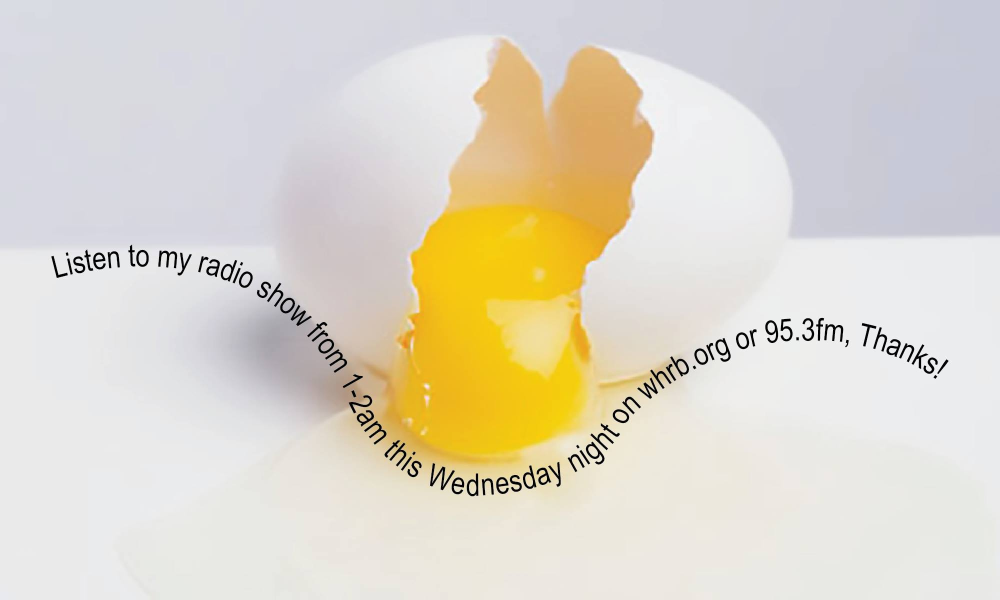 | |
| telling people to listen to my radio show | listen! |